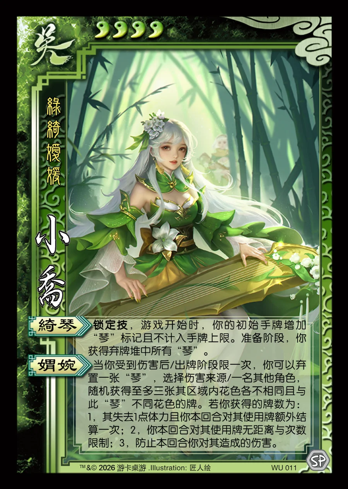

点击卡面查看大图
吴
乐小乔
♥4绿绮嫒媛
绮琴锁定技
锁定技，游戏开始时，你的初始手牌增加“琴”标记且不计入手牌上限。准备阶段，你获得弃牌堆中所有“琴”。
媦婉
当你受到伤害后/出牌阶段限一次，你可以弃置一张“琴”，选择伤害来源/一名其他角色，随机获得至多三张其区域内花色各不相同且与此“琴”不同花色的牌。若你获得的牌数为：1，其失去1点体力且你本回合对其使用牌额外结算一次；2，你本回合对其使用牌无距离与次数限制；3，防止本回合你对其造成的伤害。